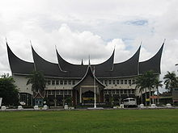

Kependudukan
Berdasarkan sensus penduduk tahun 2010, jumlah populasi Sumatera Barat mencapai 4.846.909 jiwa, dengan kepadatan penduduk sebanyak 110 jiwa/km2. Kabupaten/kota yang memiliki penduduk paling banyak adalah Kota Padang, yang mencapai 833.562 jiwa. Sedangkan kabupaten/kota yang memiliki tingkat kepadatan tertinggi adalah Kota Bukittinggi, yakni 4.400 jiwa/km2. Mayoritas masyarakat Sumatera Barat beretnis Minangkabau, yang keseluruhannya memeluk Islam.
Pendidikan

Sumatera Barat pernah menjadi pusat pendidikan di pulau Sumatera, terutama pendidikan Islam dengan surau sebagai basis utamanya. Pada masa kolonial Hindia Belanda, selain pendidikan Islam berkembang pula pendidikan model Barat. Pada tahun 1856, pemerintah Hindia Belanda mendirikan Sekolah Raja di Bukittinggi. Selain sekolah yang dikelola oleh pemerintah, banyak pula sekolah yang dikelola oleh swasta, seperti Sekolah Adabiah di Padang, INS Kayutanam, Sumatera Thawalib, dan Diniyyah Puteri di Padang Panjang. Sehingga pada saat itu, Sumatera Barat merupakan salah satu wilayah Hindia Belanda yang memiliki jumlah sekolah dan pelajar cukup besar.[9] Setelah masa kemerdekaan, di Sumatera Barat juga banyak didirikan universitas dan sekolah tinggi. Bermula dari Universitas Andalas pada tahun 1955, selanjutnya juga berdiri IAIN Imam Bonjol, Universitas Negeri Padang, dan IPDN Bukittinggi. Beberapa universitas swasta terkemuka di provinsi ini antara lain Universitas Bung Hatta dan Universitas Muhammadiyah Sumatera Barat. Kini hampir disetiap kabupaten dan kota di Sumatera Barat telah memiliki perguruan tinggi, dengan jumlah terbesar berada di Padang. Pada tahun 2006, angka melek huruf latin di provinsi ini mencapai 96,35%. Angka partisipasi sekolah untuk usia 19-24 tahun, atau yang mengambil jenjang perguruan tinggi mencapai 27,8%. Angka ini berada di atas rata-rata nasional yang hanya sebesar 16,13%.
Terdapat dua Taman Nasional di provinsi ini, yaitu Taman Nasional Siberut yang terdapat di pulau Siberut (Kabupaten Kepulauan Mentawai) dan Taman Nasional Kerinci Seblat. Taman nasional terakhir ini wilayahnya membentang di empat provinsi: Sumatera Barat, Jambi, Bengkulu, dan Sumatera Selatan.
Selain kedua Taman Nasional tersebut terdapat juga beberapa cagar alam lainnya, yaitu Cagar Alam Rimbo Panti, Cagar Alam Lembah Anai, Cagar Alam Batang Palupuh, Cagar Alam Air Putih di daerah Kelok Sembilan, Cagar Alam Lembah Harau, Cagar Alam Beringin Sakti dan Taman Raya Bung Hatta.
Suku Bangsa
Mayoritas penduduk Sumatera Barat merupakan suku Minangkabau. Di daerah Pasaman selain etnis Minang, juga berdiam suku Batak dan suku Mandailing. Kedatangan mereka ke Sumatera Barat terutama pada masa Perang Paderi. Di beberapa daerah transmigrasi, seperti di Sitiung, Lunang Silaut, dan Padang Gelugur, terdapat pula suku Jawa. Sebagian diantaranya adalah keturunan imigran asal Suriname yang memilih kembali ke Indonesia pada akhir tahun 1950-an. Oleh Presiden Soekarno saat itu, diputuskan untuk menempatkan mereka di sekitar daerah Sitiung. Hal ini juga tidak terlepas dari politik pemerintah pusat pasca PRRI.
Di Kepulauan Mentawai yang mayoritas penduduknya beretnis Mentawai, jarang dijumpai masyarakat Minangkabau. Etnis Tionghoa hanya terdapat di kota-kota besar, seperti Padang, Bukittinggi, dan Payakumbuh. Di Padang dan Pariaman, juga terdapat masyarakat Nias dan Tamil dalam jumlah kecil.
Bahasa yang digunakan dalam keseharian ialah Bahasa Minangkabau yang memiliki beberapa dialek, seperti dialek Bukittinggi, dialek Pariaman, dialek Pesisir Selatan, dan dialek Payakumbuh. Di daerah Pasaman dan Pasaman Barat yang berbatasan dengan Sumatera Utara, juga dituturkan Bahasa Batak dialek Mandailing. Sementara itu di daerah kepulauan Mentawai banyak digunakan Bahasa Mentawai. Bahasa Tamil dituturkan oleh orang Tamil di Padang.
Agama
Islam adalah agama mayoritas yang dipeluk oleh sekitar 98% penduduk Sumatera Barat. Selain itu ada juga yang beragama Kristen terutama di kepulauan Mentawai sekitar 1,6%, Buddha sekitar 0,26%, dan Hindu sekitar 0,01%, yang dianut oleh masyarakat pendatang.
Berbagai tempat ibadah, yang didominasi oleh masjid dan musala, dapat dijumpai di setiap kabupaten dan kota di Sumatera Barat. Masjid terbesar adalah Masjid Raya Sumatera Barat di Padang. Sedangkan masjid tertua diantaranya adalah Masjid Raya Ganting di Padang dan Masjid Tuo Kayu Jao di kabupaten Solok. Arsitektur khas Minangkabau mendominasi baik bentuk masjid maupun musala. Masjid Raya Sumatera Barat memiliki bangunan berbentuk gonjong, dihiasi ukiran Minang sekaligus kaligrafi. Ada juga masjid dengan atap yang terdiri dari beberapa tingkatan yang makin ke atas makin kecil dan sedikit cekung.
| Tahun | 2000 | 2004 | 2005 | 2006 | 2007 | 2009 | 2010 | |||||
|---|---|---|---|---|---|---|---|---|---|---|---|---|
| Jumlah penduduk | 4.227.689 | 4.594.961 | 4.566.126 | 4.732.678 | 4.763.130 | 4.795.202 | 4.846.909 | |||||
| Sejarah kependudukan Sumatera Barat | ||||||||||||